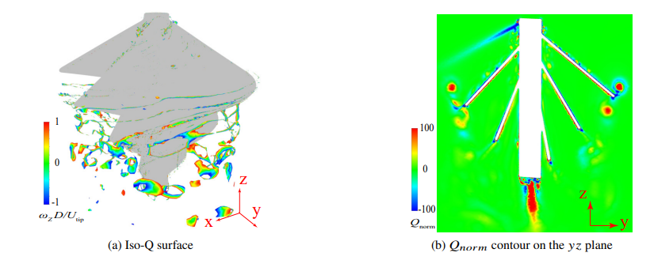

This project investigated how the geometry of an Archimedes-style propeller affects both aerodynamic performance and the noise produced by the rotating blades. The work combined high-fidelity computational fluid dynamics with aeroacoustic post-processing so that thrust, torque, wake structure, and acoustic behavior could be studied together rather than as separate problems.
I modeled multiple Archimedes propeller configurations in ANSYS Fluent. The simulations used Delayed Detached Eddy Simulation (DDES) with the SST k–ω turbulence model to resolve the unsteady flow around the rotating propeller. Aeroacoustic predictions were then obtained using the Ffowcs Williams–Hawkings (FW–H) formulation, allowing the same simulation campaign to be used to study both aerodynamic loading and sound generation.
The computational meshes reached roughly 15.7 million cells, with near-wall resolution targeted below y+ = 1. For each geometry, I evaluated quantities such as thrust, torque, figure of merit, pressure distribution, vortical structures, and acoustic directivity. The CFD image above shows the type of wake analysis used to identify coherent vortices and regions of strong rotational flow.
The simulations showed that the helical blade geometry produces a complicated three-dimensional wake rather than a simple, uniform slipstream. Strong pressure differences near the blade leading-edge regions contribute substantially to thrust generation, while the blade tips shed distinct vortex structures that persist downstream. Visualizing those structures with Q-criterion and vorticity-based quantities made it possible to connect features in the wake to changes in the propeller geometry.
The acoustic analysis also indicated that the sound field is directional. Instead of radiating uniformly, the propeller can produce stronger tonal content in certain directions. That matters for small UAV applications because a configuration with acceptable thrust may still be undesirable if its dominant noise is concentrated toward an observer or sensitive area.
The computational work was paired with laboratory testing using a physical propeller setup and LabVIEW-based data acquisition. The purpose of the experimental work was to compare measured propeller behavior with the numerical predictions and improve confidence in the simulation methodology. This combination of CFD and testing was important because a visually convincing flow solution is not enough by itself; the aerodynamic trends need to agree with physical measurements before the model can be trusted for design decisions.
For a drone or other small aircraft, propeller design is a trade between efficiency, thrust, structural practicality, and noise. This project gave me experience treating those quantities as a coupled engineering problem. It also strengthened my ability to move between geometry, meshing, turbulence modeling, unsteady CFD, data reduction, physical testing, and technical communication rather than treating simulation as an isolated software exercise.